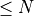
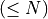
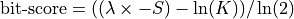
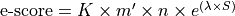
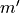
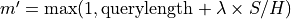

Appendix¶
RTG gapped alignment technical description¶
Real Time Genomics utilizes its own DNA sequence alignment tool and scoring system for aligned reads. Most methods for sequence comparison and alignment use a small set of operations derived from the notion of edit distance [1] to discover differences between two DNA sequences. The edit operations introduce insertions, deletions, and substitutions to transform one sequence into another. Alignments are termed global if they extend over all residues of both sequences.
Most programs for finding global alignments are based on the Needleman-Wunsch algorithm [2]. Alternatively, alignments may be local, in which case reported alignments may contain subsequences of the input sequences. The Smith-Waterman variation on the Needleman-Wunsch algorithm finds such alignments [3]. The proprietary RTG algorithm employs a further variation of this approach, using a dynamic programming edit-distance calculation for alignment of reads to a reference sequence. The alignment is semi-global in that it always covers the entire read but usually only covers a portion of the reference.
Alignment computations¶
Following the read mapping stage, the RTG aligner is presented with a read, a reference, a putative start position, and the frame. An alignment is produced with a corrected start position, which is subsequently converted by RTG into a SAM record.
If the corrected start position differs from the putative start position, then the alignment may be recomputed starting from the new start position (this is because slightly different alignments can result depending on the start position given to the aligner). Later stages in the RTG pipeline may decide to discard the alignment or to identify alignments together (for the purpose of removing duplicates). But the reference is always presented in the forward-sense and the edit-distance code itself makes the necessary adjustment for reverse complement cases. This avoids having to construct a reverse complement copy of the reference.
The matrix is initialized in a manner such that a small shift in start position incurs no penalty, but as the shift increases, an increasing penalty is applied. If after completing the alignment, such a path is still chosen, then the penalty is removed from the resulting score. This penalty is designed to prevent the algorithm from making extreme decisions like deleting the entire reference.
Alignment scoring¶
The basic costs used in the alignment are 0 for a match, 9 for a
substitution, 19 for initiating an insertion or deletion, and 1 for
continuing an insertion or deletion. All of these except for the match
score can be overridden using the --mismatch-penalty parameter (for
substitutions), the --gap-open-penalty parameter (for initiating an
insertion or deletion) and the --gap-extend-penalty parameter (for
continuing an insertion or deletion).
By default the penalty for matching an unknown nucleotide (n) in the
read or reference is 5, however this can be overridden using the
--unknowns-penalty flag. Note that regardless of the penalty for
unknown nucleotides the CIGAR will always indicate unknown bases as
mismatches. Occasionally, alignments may go outside the limits of the
reference (that is, off the left or right ends of the reference). Such
virtual bases are considered as unknown nucleotides.
Once the alignment is determined, the sum of these costs for the alignment path is reported as the alignment score and produced in the AS field of the corresponding SAM record. If there is a tie between an indel versus substitution operation for a particular matrix cell, then the tie is broken in favor of the substitution (except in the special case of the last column on the reference).
In the following example, the alignment score is 48, comprising a penalty of 20 for a two-nucleotide insert in the reference, 9 for a mismatch, and 19 for a one-nucleotide insert in the read. Notice there is no penalty for unknown nucleotide.
accg--gactctctgacgctgcncgtacgtgccaaaaataagt (reference)
|||| |||||| ||||||||||||||||| ||||||||||||
accgttgactctgtgacgctgcacgtacgt-ccaaaaataagt (read)
In addition to the alignment score, a CIGAR is also reported in SAM records.
References for this section
Using SAM/BAM Read Groups in RTG map¶
It is good practice to ensure the output BAM files from the map
command contain tracking information regarding the sample and read set.
This is accomplished by specifying a read group to assign reads to. See
the SAM specification for the full details of read groups, however for
RTG tools, it is important to specify at least ID, SM and PL
fields in the read group. The ID field should be a unique identifier
for the read group, while the SM field should contain an identifier
for the sample that was sequenced. Thus, you may have the same sample
identifier present in multiple read groups (for example if the sample
was sequenced in multiple lanes or by different sequencing
technologies). All sample names employed by pedigree or sample-oriented
commands should match the values supplied in the SM field, while
sequencer calibration information is grouped by the read group ID
field, and certain algorithm configuration (for example aligner
penalties) may have appropriate defaults selected based on the PL
field.
While it is possible to post-process BAM files to add this information, it is more efficient to supply the read group information either during mapping or when formatting read data to SDF. For the RTG software, the read group can either be specified in a string on the command line or by creating a file containing the SAM-formatted read group header entry to be passed to the command.
To specify a read group on the command line directly use a string
encapsulated in double quotes using \t to denote a TAB character:
$ rtg map ... --sam-rg "@RG\tID:SRR002978\tSM:NA19240\tPL:ILLUMINA" ...
To specify a read group using a file, create or use a file containing a single SAM-formatted read group header line:
$ echo -e "@RG\tID:SRR002978\tSM:NA19240\tPL:ILLUMINA" > mysamrg.txt
$ cat mysamrg.txt
@RG ID:SRR002978 SM:NA19240 PL:ILLUMINA
$ rtg map ... --sam-rg mysamrg.txt ...
Note that when supplying read group headers in a file literal TAB
characters, not \t, are required to separate fields.
The platform tags supported by RTG are ILLUMINA for Illumina reads,
COMPLETE for Complete Genomics version 1 reads, COMPLETEGENOMICS for
Complete Genomics version 2 reads, LS454 for 454 Life Sciences reads
and IONTORRENT for Ion Torrent reads.
When mapping directly from SAM/BAM input with a single read group, this will automatically be set using that read group. The read group will also be automatically set when mapping from an SDF which had the read group information stored in it during formatting.
RTG reference file format¶
Many RTG commands can make use of additional information about the
structure of a reference genome, such as expected ploidy, sex
chromosomes, location of PAR regions, etc. When appropriate, this
information may be stored inside a reference genome’s SDF directory in a
file called reference.txt.
The format command will automatically identify several common
reference genomes during formatting and will create a reference.txt
in the resulting SDF. However, for non-human reference genomes, or less
common human reference genomes, a pre-built reference configuration file
may not be available, and will need to be manually provided in order to
make use of RTG sex-aware pipeline features.
Several example reference.txt files for different human reference
versions are included as part of the RTG distribution in the scripts
subdirectory, so for common reference versions it will suffice to copy
the appropriate example file into the formatted reference SDF with the
name reference.txt, or use one of these example files as the basis
for your specific reference genome.
To see how a reference text file will be interpreted by the chromosomes
in an SDF for a given sex you can use the sdfstats command with the
--sex flag. For example:
$ rtg sdfstats --sex male /data/human/ref/hg19
Location : /data/human/ref/hg19
Parameters : format -o /data/human/ref/hg19 -I chromosomes.txt
SDF Version : 11
Type : DNA
Source : UNKNOWN
Paired arm : UNKNOWN
SDF-ID : b6318de1-8107-4b11-bdd9-fb8b6b34c5d0
Number of sequences : 25
Maximum length : 249250621
Minimum length : 16571
Sequence names : yes
N : 234350281
A : 844868045
C : 585017944
G : 585360436
T : 846097277
Total residues : 3095693983
Residue qualities : no
Sequences for sex=MALE:
chrM POLYPLOID circular 16571
chr1 DIPLOID linear 249250621
chr2 DIPLOID linear 243199373
chr3 DIPLOID linear 198022430
chr4 DIPLOID linear 191154276
chr5 DIPLOID linear 180915260
chr6 DIPLOID linear 171115067
chr7 DIPLOID linear 159138663
chr8 DIPLOID linear 146364022
chr9 DIPLOID linear 141213431
chr10 DIPLOID linear 135534747
chr11 DIPLOID linear 135006516
chr12 DIPLOID linear 133851895
chr13 DIPLOID linear 115169878
chr14 DIPLOID linear 107349540
chr15 DIPLOID linear 102531392
chr16 DIPLOID linear 90354753
chr17 DIPLOID linear 81195210
chr18 DIPLOID linear 78077248
chr19 DIPLOID linear 59128983
chr20 DIPLOID linear 63025520
chr21 DIPLOID linear 48129895
chr22 DIPLOID linear 51304566
chrX HAPLOID linear 155270560 ~=chrY
chrX:60001-2699520 chrY:10001-2649520
chrX:154931044-155260560 chrY:59034050-59363566
chrY HAPLOID linear 59373566 ~=chrX
chrX:60001-2699520 chrY:10001-2649520
chrX:154931044-155260560 chrY:59034050-59363566
The reference file is primarily intended for XY sex determination but should be able to handle ZW and X0 sex determination also.
The following describes the reference file text format in more detail.
The file contains lines with TAB separated fields describing the
properties of the chromosomes. Comments within the reference.txt file
are preceded by the character #. The first line of the file that is
not a comment or blank must be the version line.
version1
The remaining lines have the following common structure:
<sex> <line-type> <line-setting>...
The sex field is one of male, female or either. The
line-type field is one of def for default sequence settings, seq
for specific chromosomal sequence settings and dup for defining
pseudo-autosomal regions. The line-setting fields are a variable
number of fields based on the line type given.
The default sequence settings line can only be specified with either
for the sex field, can only be specified once and must be specified if
there are not individual chromosome settings for all chromosomes and
other contigs. It is specified with the following structure:
either def <ploidy> <shape>
The ploidy field is one of haploid, diploid, triploid,
tetraploid, pentaploid, hexaploid, polyploid or
none. The shape field is one of circular or linear.
The specific chromosome settings lines are similar to the default
chromosome settings lines. All the sex field options can be used,
however for any one chromosome you can only specify a single line for
either or two lines for male and female. They are specified
with the following structure:
<sex> seq <chromosome-name> <ploidy> <shape> [allosome]
The ploidy and shape fields are the same as for the default chromosome settings line. The chromosome-name field is the name of the chromosome to which the line applies. The allosome field is optional and is used to specify the allosome pair of a haploid chromosome.
The pseudo-autosomal region settings line can be set with any of the sex field options and any number of the lines can be defined as necessary. It has the following format:
<sex> dup <region> <region>
The regions must be taken from two haploid chromosomes for a given sex,
have the same length and not go past the end of the chromosome. The
regions are given in the format <chromosome-name>:<start>-<end> where
start and end are positions counting from one and the end is
non-inclusive.
An example for the HG19 human reference:
# Reference specification for hg19, see
# http://genome.ucsc.edu/cgi-bin/hgTracks?hgsid=184117983&chromInfoPage=
version 1
# Unless otherwise specified, assume diploid linear. Well-formed
# chromosomes should be explicitly listed separately so this
# applies primarily to unplaced contigs and decoy sequences
either def diploid linear
# List the autosomal chromosomes explicitly. These are used to help
# determine "normal" coverage levels during mapping and variant calling
either seq chr1 diploid linear
either seq chr2 diploid linear
either seq chr3 diploid linear
either seq chr4 diploid linear
either seq chr5 diploid linear
either seq chr6 diploid linear
either seq chr7 diploid linear
either seq chr8 diploid linear
either seq chr9 diploid linear
either seq chr10 diploid linear
either seq chr11 diploid linear
either seq chr12 diploid linear
either seq chr13 diploid linear
either seq chr14 diploid linear
either seq chr15 diploid linear
either seq chr16 diploid linear
either seq chr17 diploid linear
either seq chr18 diploid linear
either seq chr19 diploid linear
either seq chr20 diploid linear
either seq chr21 diploid linear
either seq chr22 diploid linear
# Define how the male and female get the X and Y chromosomes
male seq chrX haploid linear chrY
male seq chrY haploid linear chrX
female seq chrX diploid linear
female seq chrY none linear
#PAR1 pseudoautosomal region
male dup chrX:60001-2699520 chrY:10001-2649520
#PAR2 pseudoautosomal region
male dup chrX:154931044-155260560 chrY:59034050-59363566
# And the mitochondria
either seq chrM polyploid circular
As of the current version of the RTG software the following are the
effects of various settings in the reference.txt file when processing
a sample with the matching sex.
A ploidy setting of none will prevent reads from mapping to that
chromosome and any variant calling from being done in that chromosome.
A ploidy setting of diploid, haploid or polyploid does not
currently affect the output of mapping.
A ploidy setting of diploid will treat the chromosome as having two
distinct copies during variant calling, meaning that both homozygous and
heterozygous diploid genotypes may be called for the chromosome.
A ploidy setting of haploid will treat the chromosome as having one
copy during variant calling, meaning that only haploid genotypes will be
called for the chromosome.
A ploidy setting of polyploid will treat the chromosome as having one
copy during variant calling, meaning that only haploid genotypes will be
called for the chromosome. For variant calling with a pedigree, maternal
inheritance is assumed for polyploid sequences.
The shape of the chromosome does not currently affect the output of mapping or variant calling.
The allosome pairs do not currently affect the output of mapping or variant calling (but are used by simulated data generation commands).
The pseudo-autosomal regions will cause the second half of the region
pair to be skipped during mapping. During variant calling the first half
of the region pair will be called as diploid and the second half will
not have calls made for it. For the example reference.txt provided
earlier this means that when mapping a male the X chromosome sections of
the pseudo-autosomal regions will be mapped to exclusively and for
variant calling the X chromosome sections will be called as diploid
while the Y chromosome sections will be skipped. There may be some edge
effects up to a read length either side of a pseudo-autosomal region
boundary.
RTG taxonomic reference file format¶
When using a metagenomic reference SDF in the species command, a
taxonomy can be applied to impute associations between reference
sequences. This is done using two files contained in the SDF directory.
The first file (taxonomy.tsv) contains an RTG taxonomy tree and the
second file (taxonomy_lookup.tsv) contains a mapping between taxon
IDs and reference sequence names. Using a reference SDF containing these
files allows the output of certain commands to include results at
different taxonomic ranks allowing analysis at differing taxonomic
levels.
Pre-constructed metagenomic reference SDFs in this format will be
available from our website
(http://www.realtimegenomics.com).
For custom reference SDF creation, the ncbi2tax and taxfilter
commands can assist the creation of a custom taxonomy.tsv file from an
NCBI taxonomy dump. The taxstats command can check the validity of a
metagenomic reference SDF.
RTG taxonomy file format¶
The RTG taxonomy file format describes the structure of the taxonomy tree. It contains multiple lines with each line being either a comment or holding data required to describe a node in the taxonomy tree.
Lines starting with a ‘#’ are comments and do not contain data. They may appear anywhere through the file. The first line of the file must be a comment containing the RTG taxonomy file version number.
Each data line in the file represents a node in the taxonomy tree and is comprised of four tab separated values. The values on each line are:
The unique taxon ID of the node in the tree. This must be an integer value greater than or equal to 1.
The taxon ID of the parent of this node. This must be an integer value corresponding to another node in the tree.
The rank of the node in the taxonomy. This is a free format string that can contain any character other than a tab.
The name of the node in the taxonomy. This is a free format string that can contain any character other than a tab.
The root of the tree is special and must have a taxon ID of 1. Since the root has no parent it can have a parent ID of either 1 (itself) or -1. The RTG taxonomy file should contain a complete and fully connected tree that has a single root and no loops.
An example of the first few lines of a taxonomy.tsv file:
#RTG taxonomy version 1.0
#taxID parID rankname
1-1 no rank root
129081 no rank unclassified sequences
40816912908 no rank metagenomes
410657408169 no rank ecological metagenomes
527640410657 species microbial mat metagenome
1315671 no rank cellular organisms
2131567 superkingdom Bacteria
11172 phylum Cyanobacteria
RTG taxonomy lookup file format¶
The RTG taxonomy lookup file format associates SDF sequence names with taxon IDs in the taxonomy tree. It contains one line for every sequence in the SDF, with each line containing two tab separated values.
The values on each line are:
The taxonomy node ID that the sequence is associated with. This must be an integer value that corresponds to a node ID from the taxonomy tree.
The name of the sequence as it appears in the SDF. (These can be discovered using the
--lengthsoption of thesdfstatscommand)
A single taxon ID may be associated with multiple sequence names. This is a way to group the chromosomes and plasmids belonging to a single organism.
An example of some lines from a taxonomy_lookup.tsv file:
1219061gi|407098174|gb|AMQV00000000.1|AMQV01000000
1219061gi|407098172|gb|AMQV01000002.1|
1219061gi|407098170|gb|AMQV01000004.1|
1219061gi|407098168|gb|AMQV01000006.1|
Pedigree PED input file format¶
The PED file format is a white space (tab or space) delimited ASCII
file. Lines starting with # are ignored. It has exactly six required
columns in the following order.
Column |
Definition |
|---|---|
Family ID |
Alphanumeric ID of a family group. This field is ignored by RTG commands. |
Individual ID |
Alphanumeric ID of an individual. This corresponds to the Sample ID specified in the read group of the individual ( |
Paternal ID |
Alphanumeric ID of the paternal parent for the individual. This corresponds to the Sample ID specified in the read group of the paternal parent ( |
Maternal ID |
Alphanumeric ID of the maternal parent for the individual. This corresponds to the Sample ID specified in the read group of the maternal parent ( |
Sex |
The sex of the individual specified as using 1 for male, 2 for female and any other number as unknown. |
Phenotype |
The phenotype of the individual specified using -9 or 0 for unknown, 1 for unaffected and 2 for affected. |
Note
The PED format is based on the PED format defined by the PLINK project: http://pngu.mgh.harvard.edu/~purcell/plink/data.shtml#ped
The value ‘0’ can be used as a missing value for Family ID, Paternal ID and Maternal ID.
The following is an example of what a PED file may look like.
# PED format pedigree
# fam-id ind-id pat-id mat-id sex phen
FAM01 NA19238 0 0 2 0
FAM01 NA19239 0 0 1 0
FAM01 NA19240 NA19239 NA19238 2 0
0 NA12878 0 0 2 0
When specifying a pedigree for the lineage command, use either the
pat-id or mat-id as appropriate to the gender of the sample cell
lineage. The following is an example of what a cell lineage PED file may
look like.
# PED format pedigree
# fam-id ind-id pat-id mat-id sex phen
LIN BASE 0 0 2 0
LIN GENA 0 BASE 2 0
LIN GENB 0 BASE 2 0
LIN GENA-A 0 GENA 2 0
RTG includes commands such as pedfilter and pedstats for simple
viewing, filtering and conversion of pedigree files.
Genetic map directory¶
Certain commands such as pedsamplesim are able to make use of genetic
linkage information provided in the form of per sequence TSV files in
a directory.
Such files must be tab separated with a single header line. The header
line must include the columns pos and cM (for centimorgans). A
chr column is also recommended, but not essential. Other columns
may be present, but are ignored.
For example, the start of such a file for chr1 is:
chr pos rate cM
chr1 6079392 0.0453026 0
chr1 6085392 0.0696987 0.0002718156
chr1 6088671 0.719604 0.0005003576373
chr1 6095199 0.203332 0.0051979325493
chr1 6098266 0.250261 0.0058215517933
The columns in the example are:
Chromosome name
Position in chromosome
Rate of crossovers in region ending at this position (ignored)
Total number of centimorgans from start of sequence
The corresponding map directory should contain a file or files for each sequence
of interest, using the naming convention
[sex.]sequence.map
where sex is an optional sex specification (either male or female)
and sequence is the name of the sequence, for example chr1.
When loading these files, an attempt is first made to load the file
corresponding to the sex of the sample being processed. If that file
does not exist, then an attempt is made to load a nonspecific version
of the file. If that also does not exist, then a uniform distribution
will be assumed. For example, if processing a female sample for chr1,
first female.chr1.map will be tested. If that does not exist, then
chr1.map will be tested. If that also does not exist, then the
uniform distribution will be used. In this way as many or as few sequences
as desired may be covered within a particular directory.
For the human genome, several sources of appropriate linkage information are available. Please note that it will generally be necessary to add headers and possibly make other adjustments to these files before they can be used with RTG.
Specific sources include:
https://github.com/cbherer/Bherer_etal_SexualDimorphismRecombination
http://bochet.gcc.biostat.washington.edu/beagle/genetic_maps/
A zip file containing the Bherer genetic map files for human build 37, with the required header manipulations already applied is available for download from: https://realtimegenomics.com/news/pre-formatted-reference-datasets
See pedsamplesim, childsim.
RTG commands using indexed input files¶
Several RTG commands require coordinate indexed input files to operate
and several more require them when the --region or --bed-regions
parameter is used. The index files used are standard tabix or BAM index
files.
The RTG commands which produce the inputs used by these commands will by
default produce them with appropriate index files. To produce indexes
for files from third party sources or RTG command output where the
--no-index or --no-gzip parameters were set, use the RTG
bgzip and index commands.
RTG output results file descriptions¶
RTG software produces output results in standard formats that may contain additional information for the unique requirements of a particular data analysis function.
Several of the RTG commands that output results to a directory also
output a simple summary report of the results of the command in HTML
format. The report file for these commands will be called index.html
and will be contained in the output directory.
SAM/BAM file extensions (RTG map command output)¶
The Sequence Alignment/Map (SAM/BAM) format is a well-known standard for listing read alignments against reference sequences. SAM records list the mapping and alignment data for each read, ordered by chromosome (or other DNA reference sequence) location.
Note
For a thorough description of the SAM format please refer to the specification at https://samtools.github.io/hts-specs/SAMv1.pdf
The map command reports alignments in the SAM/BAM format with some
minor differences.
A sample RTG SAM file is shown below, describing the relationship
between a read and a reference sequence, including gaps and mismatches
as determined by the RTG map aligner.
@HD VN:1.0 SO:coordinate
@PG ID:RTG VN:v2.0-EAP2.1 build 25581 (2010-03-11) CL:map -t human_REF_SDF -i human_READS_SDF -o humanMAPPING8 -w 22 -a 2 -b 2 -c 2
@SQ SN:chr1 LN:643292
@SQ SN:chr2 LN:947102
@SQ SN:chr3 LN:1060087
@SQ SN:chr4 LN:1204112
@SQ SN:chr5 LN:1343552
@SQ SN:chr6 LN:1418244
@SQ SN:chr7 LN:1501719
@SQ SN:chr8 LN:1419563
@SQ SN:chr9 LN:1541723
@SQ SN:chr10 LN:1694445
@SQ SN:chr11 LN:2035250
@SQ SN:chr12 LN:2271477
@SQ SN:chr13 LN:2895605
@SQ SN:chr14 LN:3291006
1035263 0 chr1 606 255 2X18=1X11=1X15= * 0 0 AATACTTTTCATTCTTTACTATTACTTACTTATTCTTACTTACTTACT * AS:i:4 NM:i:4 IH:i:1 NH:i:1
1572864 16 chr1 2041 255 48= * 0 0 TACTTACTTTCTTCTTACTTATGTGGTAATAAGCTACTCGGTTGGGCA * AS:i:0 NM:i:0 IH:i:1 NH:i:1
2649455 0 chr1 3421 255 2X46= * 0 0 AAGTACTTCTTAGTTCAATTACTATCATCATCTTACCTAATTACTACT * AS:i:2 NM:i:2 IH:i:1 NH:i:1
RTG identifies each query name (or QNAME) with an RTG identifier,
which replaced the original identifier associated with the read data.
The RTG samrename utility is used to relabel the alignment records
with the original sequence names.
The CIGAR format has evolved from the original SAM specification.
Formerly, a CIGAR string might appear as 283M1D1I32N8M, where M
indicated a match or mismatch, I indicated an insertion, D indicated
a deletion, and N indicated a skipped region.
In the sample SAM file above, the RTG CIGAR score characters are
modified as represented by the string 2X18=1X11=1X15=, where X
indicates a mismatch, = indicates a match, I indicates an insertion,
and D indicates a deletion. Obviously, this provides more specificity
around the precise location of the mismatch in the alignment.
Notice that optional fields are reported as in SAM for alignment score
(AS), number of nucleotide differences (NM), number of reported
alignments for a particular read (NH), number of stored alignments
(IH) and depending on flag settings, the field containing the string
describing mismatching positions (MD) may be included. The alignment
score is calculated and reported for RTG as described in
RTG gapped alignment technical description.
The following list describes RTG SAM/BAM file characteristics that may depart from or be undescribed in the SAM specification.
Paired-end sequencing data
FLAGis set to 0x02 in properly paired reads and unset for unmated or unmapped reads.For all non-uniquely mapped reads
FLAG0x100 is set.Unmated and unmapped reads will have the
FLAG0x08 set to reflect whether the mate has been mapped, howeverRNEXTandPNEXTwill always be “*”.For mapped reads, the SAM standard
NHattribute is used, even for uniquely mapped reads (NH:i:1).Single-end sequencing data
For all non-uniquely mapped reads
FLAG0x100 is set.For mapped reads, the SAM standard
NHattribute is used, even for uniquely mapped reads (NH:i:1).Unmapped reads
RNAMEandCIGARare set as “*”.POS, andMAPQare set as 0.
For mated records, the XA attribute contains the sum of the alignment
scores for each arm. It is this score that is used to determine the
equality for the max top results for mated records. All the mated
records for a read should have the same XA score.
In addition, for unmapped read arms, the optional attribute XC may
be displayed in SAM/BAM files, using a character code that indicates the
internal read mapping stage where the read arm was discarded as unmated
or unmapped. If this is reported, it means that the read arm had
matching hits at one point during the mapping phase.
Single-end SAM character codes include:
Character |
Definition |
|---|---|
|
Indicates that the number of raw index hits for the read exceeded the internal threshold of 65536. |
|
Indicates that after initial ranking of hits for the read, too many hits were present (affected by |
|
Indicates that after alignment scores are calculated, the  remaining hits were discarded because they exceeded the mismatches threshold (affected by
|
|
Indicates that there were good scoring hits, but the arm was discarded because there were too many of these hits (affected by |
Paired-end SAM character codes include:
Character |
Definition |
|---|---|
|
Indicates that the number of raw index hits for the read exceeded the internal threshold of 65536. |
|
Indicates that there were index matches for the read arm, but no potential mated hits were found (affected by |
|
Indicates that potential mated hits were found for this read arm with its mate, but were discarded because they exceeded the mismatches threshold (affected by
|
|
Indicates that no potential mated hits were found, and after alignment scores are calculated, the 
remaining hits were discarded because they exceeded the mismatches threshold (affected by |
|
Indicates that good scoring hits were found for this read arm with its mate, but were discarded because there were too many hits at the best score (affected by
|
|
Indicates that no potential mated hits were found, there were good scoring unmated hits, but the arm was discarded because there were too many of these hits (affected by |
SAM/BAM file extensions (RTG cgmap command output)¶
In addition to the file extensions described for the map command in
SAM/BAM file extensions (RTG map command output), the
cgmap command also outputs several additional fields specific to the
nature of Complete Genomics reads.
A sample RTG SAM file is shown below, describing the relationship
between some reads and a reference sequence, including gaps, mismatches
and overlaps as determined by the RTG cgmap aligner.
@HD VN:1.0 SO:coordinate
@PG ID:RTG PN:RTG VN:v2.3 CL:cgmap -i bac_READS_SDF -t bac_REF_SDF -o bac_MAPPING -e 7 -E 5
@SQ SN:bac LN:100262
1 179 bac 441 55 24=5N10= = 765 324 TGACGCCTCTGCTCTTGCAAGTCNTTCACATTCA 544400/31/1\*2\*858154468!073./66222 AS:i:0 MQ:i:255 XU:Z:5=1B19=1R5N10= XQ:Z:+ XA:i:0 IH:i:1 NH:i:1
1 115 bac 765 55 10=5N8=1I14= = 441 -324 ANAGAACTGGAACCATTCATGGAAGGCCAGTGA 5!5/1,+!431/..,153002076-13435001 AS:i:0 MQ:i:255 XU:Z:1=1R5=1R2=5N8=1I11=2B5= XQ:Z:74 XR:Z:TA XA:i:0 IH:i:1 NH:i:1
83 179 bac 4963 55 3=1X19=5N10= = 5257 294 GGAAGGAGTGCTGCAGGCCGACCCTCATGGAGA 42062-51/4-1,55.010456-27/2711032 AS:i:1 MQ:i:255 XU:Z:3=1X1=2B20=5N10= XQ:Z:-. XR:Z:A XA:i:1 IH:i:1 NH:i:1
83 115 bac 5257 55 10=5N25= = 4963 -294 CCTCCTAGCGGTACATCTCCAGCCCCTTCCTAGNA 55541\*,-/3+1,2,13525167".21806010!2 AS:i:0 MQ:i:255 XU:Z:10=5N23=1R1= XA:i:1 IH:i:1 NH:i:1
The XU field is an extended CIGAR format which has additional
characters for encoding extra information about a Complete Genomics
read. The extra characters are B for encoding a backstep on the
reference (overlap in the read), T for an unknown nucleotide in the
reference and R for an unknown nucleotide in the read. In the case
where both the reference and the read have an unknown nucleotide at the
same place the R character is used.
The XQ field is the quality in the same format as the SAM QUAL field
for the nucleotides in the overlap region of the read. It is present
when backsteps exist in the extended CIGAR field.
The XR field contains the nucleotides from the read which differ from
the reference (read delta). It is present when there are mismatches,
inserts, unknowns on the reference or soft clipping represented in the
extended CIGAR.
Using these three additional fields with the QUAL field, position that
the read mapped to, and the reference, it is possible to reconstruct the
original Complete Genomics read.
For example:
Record:
Position 4963 42062-51/4-1,55.010456-27/2711032 XU:Z:3=1X1=2B20=5N10= XQ:Z:-. XR:Z:A
Reference 4960-5010:
CCTGGAGG GAGTGCTGCAGGCCGACCAGCAACTCATGGAGAAGACCAAGG
GGAAGGGGAGTGCTGCAGGCCGACC CTCATGGAGA
42062-.-51/4-1,55.010456-_____27/2711032
Flattened Read from SAM file:
GGAAGGAGTGCTGCAGGCCGACCCTCATGGAGA
42062-51/4-1,55.010456-27/2711032
Reconstructed Read:
GGAAGGGGAGTGCTGCAGGCCGACCCTCATGGAGA
42062-.-51/4-1,55.010456-27/2711032
This example shows how the mismatch and read delta replace the nucleotide from the reference to form the read. It also shows that the backstep in the extended CIGAR is used to record overlap in the read. Note that the number of additional quality characters in the corresponds to the number of backsteps and that the additional quality characters will always be inserted into the read qualities on the inner-most side of the overlap region.
Record:
Position 65 5!5/1,+!431/..,153002076-134735001 XU:Z:1=1R5=1T2=5N8=1I11=2B5= XR:Z:TA XQ:Z:74
Reference 760-810
AGAGGAGAGAACNGGTTTGGAACCATTC TGGAAGGCCAG TGAGCTGTGTT
ANAGAACTGG_____AACCATTCATGGAAGGCCAGAGTGA
5!5/1,+143_____1/..,153002076-1347435001
Flattened Read from SAM file:
ANAGAACTGGAACCATTCATGGAAGGCCAGTGA
5!5/1,+!431/..,153002076-13435001
Reconstructed Read:
ANAGAACNGGAACCATTCATGGAAGGCCAGAGTGA
5!5/1,+1431/..,153002076-1347435001
This example shows how the R character in the extended CIGAR
corresponds to an unknown in the read and how the T character
corresponds to an unknown in the reference. Note that when there is an
unknown in the reference but not in the read the nucleotide is included
in the read delta as are inserted nucleotides. Also note that although
the backstep is used in this case to reconstruct part of the outside
five nucleotides the overlap quality characters still correspond to the
inside nucleotides.
Small-variant VCF output file description¶
The snp, family, somatic, tumoronly, and
population commands call single nucleotide polymorphisms (SNPs),
multiple nucleotide polymorphisms (MNPs), and indels for a single
individual, a family of individuals or a cancer and normal pair
respectively. At each position in the reference, a base pair
determination is made based on statistical analysis of the accumulated
read alignments. The predictions and accompanying statistics are
reported in a text-based output file named snps.vcf.
Note
RTG variant calls are stored in VCF format (version 4.2). For more information about the VCF format, refer to the specification online at: https://samtools.github.io/hts-specs/VCFv4.2.pdf
The snps.vcf output file displays each variant called with confidence.
The location and type of the call, the base pairs (reference and
called), and a confidence score are standard output in the snps.vcf
output file. Additional support statistics in the output describe read
alignment evidence that can be used to evaluate confidence in the called
variants.
The commands also produce a summary.txt file which has simple counts
of the variants detected and some ratios which can be used as a quick
indication of SNP calling performance.
The following sample snps.vcf file is an example of the output
produced by an RTG SNP call run. Each line in a snps.vcf output has
tab-separated fields and represents a SNP variation calculated from the
mapped reads against the reference genome.
This file represents the variations per chromosome as a result of the SAM/BAM mapped alignments against a reference genome.
##fileformat=VCFv4.2
##fileDate=20110524
##source=RTGv2.2 build 35188 (2011-05-18)
##CL=snp -o snp-hslo-18-u -t hst1 hslo-18-u/alignments.bam
##RUN-ID=b1f96b37-7f77-4d74-b472-2a36ba21397e
##reference=hst1
##contig=<ID="chr1",length=207900>
##INFO=<ID=XRX,Number=0,Type=Flag,Description="RTG variant was called using complex caller">
##INFO=<ID=CT,Number=1,Type=Integer,Description="Coverage threshold that was applied">
##FILTER=<ID=OC,Description="Coverage threshold exceeded">
##FILTER=<ID=RC,Description="RTG variant is a complex region">
##FILTER=<ID=RX,Description="RTG variant contained within hypercomplex region">
##FORMAT=<ID=GT,Number=1,Type=String,Description="Genotype">
##FORMAT=<ID=DP,Number=1,Type=Integer,Description="Read Depth">
##FORMAT=<ID=RE,Number=1,Type=Float,Description="RTG Total Error">
##FORMAT=<ID=AR,Number=1,Type=Float,Description="Ambiguity Ratio">
##FORMAT=<ID=GQ,Number=1,Type=Float,Description="Genotype Quality">
##FORMAT=<ID=RS,Number=.,Type=String,Description="RTG Support Statistics">
#CHROM POS ID REF ALT QUAL FILTER INFO FORMAT SAMPLE
chr1 43230 . A G 17.1 PASS . GT:DP:RE:AR:GQ:RS 1/1:7:0.280:0.000:17.1:G,7,0.280
chr1 43494 . TTTAAAT TT:CTTAAAC 181.6 PASS . GT:DP:RE:AR:GQ:RS 1/2:10:0.428:0.024:15.3:CTTAAC,5,0.373
chr1 43638 . T C 15.3 PASS . GT:DP:RE:AR:GQ:RS 1/1:6:0.210:0.000:15.3:C,6,0.210
chr1 43918 . C T 11.4 PASS . GT:DP:RE:AR:GQ:RS 1/1:5:0.494:0.000:11.4:T,5,0.494
chr1 44038 . C T 18.9 PASS . GT:DP:RE:AR:GQ:RS 1/1:8:0.672:0.000:18.9:T,8,0.672
chr1 44173 . A G 12.0 PASS . GT:DP:RE:AR:GQ:RS 1/1:5:0.185:0.000:12.0:G,5,0.185
chr1 44218 . TCCTCCA ACCACCT 385.4 PASS . GT:DP:RE:AR:GQ:RS 1/1:43:3.925:0.015:80.8:ACCACCT,5,0.003,CCCCCCA,1,0.631,CCCTCCA,1,0.631, TCCTCCA,30,2.024,TCCTTCA,4,0.635,~A,1,0.000,~TCCA,1,0.001
chr1 44329 . A G 12.2 PASS . GT:DP:RE:AR:GQ:RS 1/1:5:0.208:0.000:12.2:G,5,0.208
chr1 44502 . T C 6.0 PASS . GT:DP:RE:AR:GQ:RS 1/1:3:0.160:0.000:6.0:C,3,0.160
chr1 44533 . G A 13.7 PASS . GT:DP:RE:AR:GQ:RS 1/1:6:0.421:0.000:13.7:A,6,0.421
chr1 202801 . A G 15.8 PASS . GT:DP:RE:AR:GQ:RS 0/1:66:30.544:0.000:15.8:A,50,24.508,C,1,0.502,G,13,4.529,T,2,1.004
Note
The VCF specification defines the semantics of the QUAL
column differently for records that contain any ALT alleles from
those which do not, and that the QUAL column is also defined as a
score applying across the set of all samples in the VCF. Thus for
multi-sample calling commands such as family, population,
somatic, etc, the QUAL score is not necessarily an indication
of the of quality the call of any particular sample.
RTG adds custom fields to the VCF format to better account for some of its unique variant calling features, described in the tables below. The exact set of fields used depend on the module run, with some fields only appropriate and present for family calling, somatic calling, etc.
Table : RTG VCF file FILTER fields
Value |
Description |
|---|---|
|
Standard VCF |
|
A predicted variation that has exceeded the maximum coverage filter threshold. |
|
A predicted variation that had greater than the given percentage of ambiguously mapped reads overlapping it. The number in the value is the percentage specified by the |
|
A predicted variation that is the same as a previous variant within a homopolymer or repeat region. |
|
The variant caller encountered a complex looking situation. A typical example would be a long insert. Some complex regions may result in simple calls. |
|
This call was made within a long complex region. Note that no attempt is made to generate complex calls in very long complex regions. |
|
A predicted variation that failed to pass homopolymer constraints specific to IonTorrent reads. |
|
The variant was filtered for an unknown reason. |
|
A predicted variation that had less than the given value for the AVR score. The number in the value is the minimum AVR score specified by the |
|
The predicted variant falls outside the BED calling regions defined by the |
Table : RTG VCF file INFO fields
Value |
Description |
|---|---|
|
The Phred scaled posterior probability that the variant at this site is present in the cancer, output by the |
|
The value shows on a scale from -1 to 1 if the evidence of a call would suggest a loss of heterozygosity. A long run of high values is a strong indicator of a loss of heterozygosity event. |
|
The combined read depth of multi-sample variant calls. |
|
The ratio of combined read depth to the expected combined read depth. |
|
Indicates the variant was called using the RTG complex caller. This means that a realignment of the reads relative to the reference and each other was required to make this call. |
|
Indicates the variant is the same as one or more other variants within a homopolymer or repeat region. |
|
Indicates the variant is called at a site where the reference is unknown, and so some other scores that require exact knowledge of the reference may not be produced. |
|
The maximum coverage threshold that was applied when the given variant has been filtered for being over the coverage threshold. |
|
The standard VCF allele count in genotypes field. For each ALT allele, in the same order as listed, the count of the allele in the genotypes. |
|
The standard VCF total number of alleles in called genotypes field. |
|
The number of adjacent simple tandem repeats on the reference sequence. |
|
The length of the repeating unit in a simple tandem repeat. |
Table : RTG VCF file FORMAT fields
Value |
Description |
|---|---|
|
The standard VCF format genotype field. |
|
The standard VCF format read depth field. |
|
The ratio of read depth to the expected read depth. |
|
The allele index (using same numbering as the |
|
The total error across bases of the reads at the SNP location. This is a corrective factor calculated from the r and q read mapping quality scores that adjusts the level of confidence higher or lower relative to read depth. |
|
The ratio of reads contributing to the variant that are considered to be ambiguous to uniquely mapped reads. |
|
The Phred scaled posterior probability that the sample is not identical to the reference. |
|
The standard VCF format genotype quality field. This is the Phred scaled posterior score of the call. It is not necessarily the same as the |
|
The genotype quality divided by the read depth of the sample. |
|
The quality field divided by the sum of the read depth for all samples. |
|
Indicates with a value of |
|
The Phred scaled probability that the call for this sample is due to a |
|
The count of evidence that is considered contrary to the call made for this sample, observed in the original sample. For example, in a normal-cancer somatic call of 0/0 -> 1/0, the Usually a high |
|
The fraction of evidence that is considered contrary to the call made for this sample, observed in the original sample. For example, in a somatic call of 0/0 -> 1/0, the The Usually a high |
|
The count of evidence that is considered contrary to the call made for this sample, observed in the derived sample. For example, in a normal-cancer somatic call of 0/1 -> 2/0, the In cases of high sample purity, a high |
|
The fraction of evidence that is considered contrary to the call made for this sample, observed in the derived sample. For example, in a somatic call of 0/1 -> 2/0, the The In cases of high sample purity, a high |
|
The Phred scaled probability that allele imbalance is present in the call. |
|
The Phred scaled probability that strand bias is present in the call. |
|
The Phred scaled probability that read position bias is present in the call. |
|
The Phred scaled probability that bias in the proportion of alignments that are properly paired is present in the call. |
|
The ratio of placed unmapped reads to mapped reads. |
|
Statistical information about the evidence for the prediction which consists of a variable number of groups of three fields, each separated by commas. The three fields are allele, count, and the sum of probability error (computed from the Phred quality). The sum of counts should equal DP and the sum of the errors should equal |
|
An alternative disagreeing hypothesis in the same format as the genotype field. This can occur when a sample intersects multiple families in a pedigree when doing population calling. |
|
The allelic depths for the reference and alternate alleles in the order listed. |
|
The allelic depths for the reference and alternate alleles in the order listed, after adjusting for poor base quality and mapping quality. |
|
The allelic depths for the reference and alternate alleles in the order listed, for reads on the forward strand. |
|
The allelic depths for the reference and alternate alleles in the order listed, for reads on the reverse strand. |
|
The allelic depths for the reference and alternate alleles in the order listed, for arm 1 reads on the forward strand. |
|
The allelic depths for the reference and alternate alleles in the order listed, for arm 2 reads on the forward strand. |
|
The allelic depths for the reference and alternate alleles in the order listed, for arm 1 reads on the reverse strand. |
|
The allelic depths for the reference and alternate alleles in the order listed, for arm 2 reads on the reverse strand. |
|
The sum of the quality of evidence (including base quality and mapping quality) for the reference and alternate alleles in the order listed. |
|
The difference in the mean |
|
The score for the somatic mutation specified by the |
|
The somatic status of the genotype for this sample. A value of 0 indicates none or wild type, a value of 1 indicates a germline variant, and a value of 2 indicates a somatic variant. |
|
The log10 scaled likelihoods for all possible genotypes given the set of alleles defined in the |
|
The |
|
The |
|
The inbreeding coefficient for the site. |
|
The Phred scaled probability that the site is not in Hardy-Weinberg equilibrium. |
|
The length of the longest allele for the site. |
|
The number of alternate alleles for the site. |
|
The ploidy of the sample. |
|
The zygosity of the sample. |
|
Categorizes the call as hom-ref ( |
|
Sum of quality of the alternate observations. |
|
The number of variants in this sample within five bases of the current variant. |
|
The adaptive variant rescoring value. It is a value between 0 and 1 that represents the probability that the variant for the sample is correct. |
The following examples of what a variant call may look like only includes the bare minimum sample field information for clarity.
#Examples of calls:
g1 64 . T A 74.0 PASS . GT 1/1 #Homozygous SNP
g1 9 . GAC G 9.0 PASS . GT 1/1 #Homozygous deletion
g1 16 . A ACGT 27.0 PASS . GT 1/1 #Homozygous insertion
g1 54 . T TA 14.0 PASS . GT 1/0 #Heterozygous insertion
g1 17 . ACGT A 71.0 PASS . GT 0/1 #Heterozygous deletion
g1 61 . TTA GCG,AAT 74.0 PASS . GT 1/2 #Heterozygous MNP
g1 3 . A . 11.0 PASS . GT 0/0 #Equality call
g1 32 . CGT . 89.0 PASS . GT 0/0 #Equality call
g1 88 . A G 249.5 PASS . GT 1 #Haploid SNP
g1 33 . A T 20.0 PASS RCE GT 1/1 #Variant which is equivalent to other variants
g1 42 . A T 13.0 RCEQUIV RCE GT 1/1 #Variant filtered due to equivalence to other variants
g1 45 . A C 5.0 OC CT=100 GT 1/1 #Variant which exceeds the coverage threshold of 100
g1 76 . G C 10.0 a10.0 . GT 1/1 #Variant which had ambiguous mappings overlapping it
g1 74 . A . 3.0 RC . GT 0/0 #Complex call with no prediction
g1 90 . G C 15.0 RX . GT 1/1 #Homozygous SNP called within a large complex region
g1 99 . C G 15.0 IONT . GT 1/1 #Variant that failed IonTorrent homopolymer constraints
g1 33 . A G,C 13.0 PASS . GT 0/1 0/2 0/2 1/2 #Mendelian family call
g1 90 . G A 20.0 PASS LOH=1 GT:SSC:SS 0/1 0/0:24.0:2 #Somatic mutation
In the outputs from the family, population and somatic commands
some additional information about the samples are provided through the
PEDIGREE and SAMPLE header lines.
The family or population command output includes additional sample
sex and pedigree information within the headers like the following:
##PEDIGREE=<Child=SM_SON,Mother=SM_MOTHER,Father=SM_FATHER>
##SAMPLE=<ID=SM_SON,Sex=MALE>
##SAMPLE=<ID=SM_MOTHER,Sex=FEMALE>
##SAMPLE=<ID=SM_FATHER,Sex=MALE>
The pedigree information contained within VCF header fields is also used
by the mendelian, pedfilter, and pedstats commands.
The somatic command output includes information about sample
relationships and genome mixtures using headers like the following:
##PEDIGREE=<Derived=SM_TUMOR,Original=SM_BASE>
##SAMPLE=<ID=SM_BASE,Genomes=SM_BASE,Mixture=1.0,Sex=MALE,Description="Original genome">
##SAMPLE=<ID=SM_TUMOR,Genomes=SM_BASE;SM_TUMOR,Mixture=0.2;0.8,Sex=MALE,Description="Original genome;Derived genome">
Regions BED output file description¶
The snp, family, population and somatic commands all output a BED file
containing regions that were considered to be complex.
The following sample regions.bed file is an example of the output
produced by an RTG variant calling run. Each line in a regions.bed
output has tab-separated fields and represents a region in the reference
genome that was considered to be complex.
CFTR.3.70s 7 7 complex-called
CFTR.3.70s 15 15 complex-called
CFTR.3.70s 18 18 complex-called
CFTR.3.70s 21 21 complex-called
CFTR.3.70s 26 30 complex-called
CFTR.3.70s 42 45 complex-over-coverage
CFTR.3.70s 84 93 extreme-coverage
CFTR.3.70s 133 165 hyper-complex
CFTR.3.70s 169 186 complex-called
CFTR.3.70s 189 195 complex-called
CFTR.3.70s 198 198 complex-no-variant
CFTR.3.70s 300 310 complex-no-hypotheses
CFTR.3.70s 435 439 complex-too-many-hypotheses
The columns in order are:
Sequence name
Region start, counting from 0
Region end, counting from 0, not inclusive
Name of the region type
Table : Region type names
Value |
Description |
|---|---|
|
Complex regions that were called using complex calling. |
|
Long complex regions for which no call attempt was made. |
|
No calls made in this region due to extreme coverage. |
|
Complex region has greater than the maximum coverage allowed. |
|
No hypotheses could be created for the complex region. |
|
Complex region evaluation resulted in no variants. |
|
Complex region had too many hypotheses for evaluation. |
SV command output file descriptions¶
The sv command is used to predict the likelihood of various structural
variant categories. The outputs produced are sv_interesting.bed.gz
which is a BED format file that identifies regions that could indicate a
structural variant and sv_bayesian.tsv.gz a tab separated format file
containing prediction strengths of event models.
The following is an example of the sv_interesting.bed.gz file output.
#chr start end areas maxscore average
chr1 10 100 1 584.5470 315.8478
chr1 49760 53270 5 630.3273 380.2483
Table : SV_INTERESTING.BED file output column descriptions
Column |
Description |
|---|---|
|
The chromosome name. |
|
The start position in the reference chromosome. |
|
The end position in the reference chromosome. |
|
The number of distinct model areas contained in the region. |
|
The maximum score reached by a model in the given region. |
|
The average score for the model areas covered by this region. |
The following is an example of the sv_bayesian.tsv.gz file output.
#Version v2.3.2 build 5c2ee18 (2011-10-05), SV bayesian output v0.1
#CL sv --step 100 --fine-step 10 --readgroup-stats map/rgstats.tsv --template /data/human/hg18.sdf -o sv map/alignments.bam
#RUN-ID 8acc8413-0daf-455d-bf9f-41d195dec4cd
#template-name position normal duplicate delete delete-left delete-right duplicate-left duplicate-right breakpoint novel-insertion max-index
chr1 11 -584.5470 -1582.1325 -3538.0052 -4168.1398 584.5470 -932.2432 -1219.9770 -630.1436 -664.3196 4
chr1 21 -521.2708 -1508.9226 -3617.4369 -4247.5716 521.2708 -865.7595 -1156.7007 -630.1450 -671.1980 4
chr1 31 -443.5759 -1425.2073 -3626.2318 -4256.3664 443.5759 -788.1160 -1079.0058 -630.1468 -662.5068 4
chr1 41 -372.8984 -1346.1013 -3676.6399 -4306.7745 372.8984 -715.6147 -1008.3284 -630.1490 -662.4542 4
chr1 51 -326.3469 -1288.4120 -3790.0943 -4420.2290 326.3469 -663.2324 -961.7768 -630.1516 -660.6529 4
chr1 61 -269.1376 -1223.0752 -3849.6462 -4479.7808 269.1376 -604.2883 -904.5676 -630.1545 -669.2223 4
chr1 71 -201.0995 -1146.3076 -3907.0182 -4537.1529 201.0995 -534.3735 -836.5295 -630.1578 -673.4514 4
chr1 81 -109.1116 -1046.1921 -3931.7913 -4561.9260 109.1116 -442.1511 -744.5415 -630.1612 -669.0146 4
chr1 91 -14.6429 -941.7897 -3980.0307 -4610.1653 14.6429 -345.7608 -650.0728 -630.1648 -664.5593 4
chr1 101 60.8820 -918.1163 -4095.1224 -4725.2570 -60.8820 -329.0012 -635.4300 -691.0506 -719.2296 0
chr1 111 117.6873 -911.1928 -4194.5855 -4824.7202 -117.6873 -327.5866 -635.4300 -747.8596 -775.8622 0
chr1 121 199.2098 -898.2490 -4380.5384 -5010.6731 -199.2098 -321.7577 -635.4300 -829.3856 -857.1902 0
Table : SV_BAYESIAN.TSV file output column descriptions
Column |
Description |
|---|---|
|
The chromosome name. |
|
The position in the reference chromosome. |
|
The prediction strength for the normal model. |
|
The prediction strength for the duplicate model. |
|
The prediction strength for the delete model. |
|
The prediction strength for the delete-left model. |
|
The prediction strength for the delete-right model. |
|
The prediction strength for the duplicate-left model. |
|
The prediction strength for the duplicate-right model. |
|
The prediction strength for the breakpoint model. |
|
The prediction strength for the novel-insertion model. |
|
The index of the model that has the maximum prediction strength for this line. The index starts from 0 meaning normal and is in the same order as the model columns. |
When the --simple-signals parameter is set an additional file called
sv_simple.tsv.gz is output which is a tab separated format file
containing the raw signals used by the sv command. The following is an
example of the sv_simple.tsv.gz output file.
#Version v2.3.2 build 5c2ee18 (2011-10-05), SV simple output v0.1
#CL sv --step 100 --fine-step 10 --readgroup-stats map/rgstats.tsv --template /data/human/hg18.sdf -o sv map/alignments.bam --simple-signals
#RUN-ID 8acc8413-0daf-455d-bf9f-41d195dec4cd
#template-name position proper-left discordant-left unmated-left proper-right discordant-right unmated-right not-paired unique ambiguous n-count
chr1 11 17.0000 0.0000 1.0000 0.0000 0.0000 0.0000 0.0000 18.0000 0.0000 0.0000
chr1 21 14.0000 0.0000 1.0000 0.0000 0.0000 0.0000 0.0000 15.0000 0.0000 0.0000
chr1 31 13.0000 0.0000 0.0000 0.0000 0.0000 0.0000 0.0000 13.0000 0.0000 0.0000
chr1 41 10.0000 0.0000 1.0000 0.0000 0.0000 0.0000 0.0000 11.0000 0.0000 0.0000
chr1 51 11.0000 0.0000 0.0000 0.0000 0.0000 0.0000 0.0000 11.0000 0.0000 0.0000
chr1 61 12.0000 0.0000 0.0000 0.0000 0.0000 0.0000 0.0000 12.0000 0.0000 0.0000
chr1 71 11.0000 0.0000 0.0000 0.0000 0.0000 0.0000 0.0000 11.0000 0.0000 0.0000
chr1 81 17.0000 0.0000 0.0000 0.0000 0.0000 0.0000 0.0000 17.0000 0.0000 0.0000
chr1 91 17.0000 0.0000 0.0000 0.0000 0.0000 0.0000 0.0000 17.0000 0.0000 0.0000
chr1 101 9.0000 0.0000 1.0000 0.0000 0.0000 0.0000 0.0000 10.0000 0.0000 0.0000
chr1 111 10.0000 0.0000 0.0000 0.0000 0.0000 0.0000 0.0000 10.0000 0.0000 0.0000
chr1 121 12.0000 0.0000 1.0000 0.0000 0.0000 0.0000 0.0000 13.0000 0.0000 0.0000
Table : SV_SIMPLE.TSV file output column descriptions
Column |
Description |
|---|---|
|
The chromosome name. |
|
The position in the reference chromosome. |
|
Count of properly paired left reads mapped in this location. |
|
Count of discordantly paired left reads mapped in this location. |
|
Count of unmated left reads mapped in this location. |
|
Count of properly paired right reads mapped in this location. |
|
Count of discordantly paired right reads mapped in this location. |
|
Count of unmated right reads mapped in this location. |
|
Count of single end reads mapped in this location. |
|
Count of unique mappings in this location. |
|
Count of ambiguous mappings in this location. |
|
The number of unknown bases on the reference for this location. |
Discord command output file descriptions¶
The discord command uses clusters of discordant reads to find possible
locations for structural variant breakends. The breakends are output in
a VCF file called discord_pairs.vcf.gz using the ALT and INFO
fields as defined in the VCF specification.
Note
RTG structural variant calls are stored in VCF format (version 4.2). For more information about the VCF format, refer to the specification online at: https://samtools.github.io/hts-specs/VCFv4.2.pdf
The following is an example of the VCF output of the discord command:
##fileformat=VCFv4.2
##fileDate=20120305
##source=RTGv2.5 build 9f7b8a5 (2012-03-05)
##CL=discord --template hst1 -o discord --readgroup-stats map/rgstats.tsv map/alignments.bam
##RUN-ID=4157329b-edb9-419a-9129-44116e7a2195
##TEMPLATE-SDF-ID=4ecc9eb83e0ccec4
##reference=hst1
##contig=<ID="chr1",length=207900>
##INFO=<ID=CIPOS,Number=2,Type=Integer,Description="Confidence interval around POS for imprecise variants">
##INFO=<ID=IMPRECISE,Number=0,Type=Flag,Description="Imprecise structural variation">
##INFO=<ID=SVTYPE,Number=1,Type=String,Description="Type of structural variant">
##INFO=<ID=DP,Number=1,Type=Integer,Description="Read Depth">
##FILTER=<ID=INCONSISTENT,Description="Supporting reads are inconsistent as to breakend location">
##FORMAT=<ID=GT,Number=1,Type=String,Description="Genotype">
#CHROM POS ID REF ALT QUAL FILTER INFO FORMAT SAMPLE
chr1 50005 . A A[simulatedSequence1:52999[ . PASS IMPRECISE;SVTYPE=BND;DP=506;CIPOS=0,0 GT 1/1
chr1 52999 . G ]simulatedSequence1:50005]G . PASS IMPRECISE;SVTYPE=BND;DP=506;CIPOS=0,0 GT 1/1
RTG adds custom fields to the VCF format to better account for some of its unique structural variant calling features, described in the tables below.
Table : RTG VCF file FILTER fields
Value |
Description |
|---|---|
|
Standard VCF “PASS”, if breakend meets all the filtering criteria. |
|
Breakend with discordant read cluster that does not agree on the possible positions. |
Table : RTG VCF file INFO fields
Value |
Description |
|---|---|
|
Indicates the number of discordant reads contributing to the cluster at this breakend. |
If the --bed parameter is set the discord command also outputs a BED
format file called discord_pairs.bed.gz containing the break-end
regions. Any break-ends which do not have a PASS in the filter field of
the VCF output will be preceded by the comment character in the BED file
output.
The following is an example of the BED output from the discord
command:
#Version v2.5 build 9f7b8a5 (2012-03-05), Discordance output 1
#CL discord --bed --template hst1 -o discord --readgroup-stats map/rgstats.tsv map/alignments.bam
#RUN-ID 4157329b-edb9-419a-9129-44116e7a2195
#chromosome start end remote count
chr1 50004 50004 remote:chr1:52998-52998 506
chr1 52998 52998 remote:chr1:50004-50004 506
The columns in the example are in BED file order:
Chromosome name
Start position in chromosome
End position in chromosome
Location of remote break-end matching this one
Count of discordant reads contributing to the break-end
Coverage command output file descriptions¶
The coverage command works out the coverage depth for a set of read
alignments for a given reference. With default settings this will
produce a BED format file containing the regions with a specific read
depth. These regions are calculated by taking the read depth of each
position as the average of itself and the read depths of the positions
to the left and right of it out to the number specified with the
--smoothing flag and then grouping the resulting values which have the
same average read depth.
The following is an example of the BED output from the coverage command:
#Version v2.3.2 build 5c2ee18 (2011-10-05), Coverage BED output v1.0
#CL coverage -o coverage-hslo-18-u -t hst1 hslo-18-u/alignments.bam
#RUN-ID c0561a1d-fb3b-4062-96ca-cad2cc3c476a
#sequence start end label coverage
chr1 0 4 chr1 2
chr1 4 13 chr1 3
chr1 13 22 chr1 4
chr1 22 29 chr1 5
chr1 29 38 chr1 6
chr1 38 45 chr1 7
chr1 45 53 chr1 8
chr1 53 64 chr1 9
chr1 64 80 chr1 10
chr1 80 128 chr1 11
chr1 128 137 chr1 10
chr1 137 157 chr1 11
chr1 157 164 chr1 12
chr1 164 169 chr1 13
chr1 169 174 chr1 14
chr1 174 177 chr1 15
chr1 177 181 chr1 16
The columns in the example are in BED file order:
Chromosome name
Start position in chromosome
End position in chromosome
Name or label of the feature, this is generally the name of the chromosome or name of any BED features overlapping the coverage region
Depth of coverage for the range specified
When the --per-region flag is set, the coverage command will alter
the criteria for outputting a BED record. Rather than defining regions
having the same level of coverage, a BED record will be produced for
each input BED region, containing the average coverage over that region.
When the --bedgraph flag is set, the coverage command will
produce a BEDGRAPH format file with the regions calculated in the same
way as for BED format output.
The following is an example of the BEDGRAPH output from the coverage
command:
#Version v2.5.0 build 79d6626 (2011-10-05), Coverage BEDGRAPH output v1.0
#CL coverage -o coverage-hslo-18-u -t hst1 hslo-18-u/alignments.bam --bedgraph
#RUN-ID 36c48ec4-52b7-48d5-b68c-71dce5dba129
track type=bedGraph name=coverage
chr1 0 4 2
chr1 4 13 3
chr1 13 22 4
chr1 22 29 5
chr1 29 38 6
chr1 38 45 7
chr1 45 53 8
chr1 53 64 9
chr1 64 80 10
chr1 80 128 11
chr1 128 137 10
chr1 137 157 11
chr1 157 164 12
chr1 164 169 13
chr1 169 174 14
chr1 174 177 15
chr1 177 181 16
The columns in the example are in BEDGRAPH file order:
Chromosome name
Start position in chromosome
End position in chromosome
Depth of coverage for the range specified
When the --per-base flag is set when running the coverage command
will produce a tab separated value file with the coverage information
for each individual base in the reference.
The following is an example of the TSV output from the coverage command:
#Version v2.3.2 build 5c2ee18 (2011-10-05), Coverage output v1.0
#CL coverage -o coverage-hslo-18-u-per-base -t hst1 hslo-18-u/alignments.bam --per-base
#RUN-ID 7798b1a5-2159-48e6-976e-86b4f8e98fa6
#sequence position unique-count ambiguous-count score
chr1 0 0 0 0.00
chr1 1 0 0 0.00
chr1 2 1 0 1.00
chr1 3 1 0 1.00
chr1 4 1 0 1.00
chr1 5 1 0 1.00
chr1 6 1 0 1.00
chr1 7 2 0 2.00
chr1 8 2 0 2.00
chr1 9 2 1 2.50
Table : COVERAGE.TSV file output column descriptions
Column |
Description |
|---|---|
|
The chromosome name. |
|
The position in the reference chromosome. |
|
The count of reads covering this position with |
|
The count of reads covering this position with |
|
The sum of one divided by the |
The coverage command produces a stats.tsv file with coverage
statistics for each chromosome in the reference and the reference as a
whole. The following is an example file:
#depth breadth covered size name
28.3238 0.9998 23766 23770 chr1
28.0013 0.9997 41447 41459 chr2
28.3151 0.9994 24930 24946 chr3
28.4955 0.9999 87734 87741 chr4
28.3822 0.9999 32600 32604 chr5
28.7159 0.9999 55042 55047 chr6
28.1109 0.9998 34887 34894 chr7
28.3305 0.9999 50025 50032 chr8
28.2229 0.9998 49627 49639 chr9
28.3817 0.9999 15912 15914 chr10
28.3569 0.9998 415970 416046 all sequences
Table : STATS.TSV column descriptions
Column |
Description |
|---|---|
|
The average depth of coverage for the region where each base position is calculated as the sum of one divided by the IH of each read alignment which covers the position. |
|
The fraction of the non-N region base positions which have a depth of one or greater. |
|
The number of non-N bases in the region which have a depth of one or greater. |
|
The number of non-N bases in the region. |
|
The name of the region, or “all sequences” for the entire reference. |
For whole-genome coverage runs, the region names are each of the chromosomes. For exome data, or other targeted sequencing where a BED file was provided, the region names are obtained from the BED file.
The coverage command produces a levels.tsv file with some statistics
about the coverage levels. The following is the start of an example
file:
#coverage_level count %age %cumulative
0 83 0.02 100.00
1 84 0.02 99.98
2 86 0.02 99.96
3 87 0.02 99.94
4 88 0.02 99.92
5 154 0.04 99.90
Table : LEVELS.TSV column descriptions
Column |
Description |
|---|---|
|
The coverage level. |
|
The count of the number of bases at this coverage level. |
|
The percentage of the reference at this coverage level. |
|
The percentage of the reference at this coverage level or higher. |
The coverage command produces a summary.txt which contains
at-a-glance coverage statistics. When the number of target
regions/chromosomes being reported is less than 100, the coverage
statistics per region (as reported in stats.tsv) are listed. A final
record is included comprising these statistics for the aggregate of all
regions.
In addition, the median depth of coverage of individual regions is included, as well as the “fold 80 penalty” measure of uniformity, which is the amount of additional sequencing that would be necessary to ensure the 80% of target region bases (in non-zero coverage targets) are covered to the current mean target region coverage.
Mapx and mapp output file description¶
The mapx and mapp commands search protein databases (with query
sequences being translated nucleotide and untranslated protein query
sequences, respectively). These commands report matches filtered on a
combination of percent identity, e-score, bit-score and alignment
score. The matches are reported in an ASCII file called
alignments.tsv with each match reported on a single line as a
tab-separated value record.
The following results file is an example of the output produced by
mapx:
#template-name frame read-id template-start template-end template-length read-start read-end read-length template-protein read-protein alignment identical %identical positive %positive mismatches raw-score bit-score e-score
gi|212691090|ref|ZP_03299218.1| +1 0 179 211 429 1 99 100 nirqgsrtfgilcmpkasgnypallrvpgagvr nirqgsrtfgifcmpkasgnypallrvpgaggr nirqgsrtfgi cmpkasgnypallrvpgag r 31 94 31 94 2 -162 67.0 2.3e-11
gi|255013538|ref|ZP_05285664.1| +1 0 176 208 428 1 99 100 nvrpgsrtygilcmpkkegkypallrvpgagir nirqgsrtfgifcmpkasgnypallrvpgaggr n+r gsrt+gi cmpk g ypallrvpgag r 25 76 27 82 6 -136 57.0 2.3e-8
gi|260172804|ref|ZP_05759216.1| +1 0 185 217 435 1 99 100 nicngsrtfgilcipkkpgkypallrvpgagvr nirqgsrtfgifcmpkasgnypallrvpgaggr ni gsrtfgi c+pk g ypallrvpgag r 25 76 26 79 7 -129 54.3 1.5e-7
gi|224537502|ref|ZP_03678041.1| +1 0 162 194 414 1 99 100 tdrwgsrfygvlcvpkkegkypallrvpgagir nirqgsrtfgifcmpkasgnypallrvpgaggr r gsr +g+ c+pk g ypallrvpgag r 21 64 24 73 9 -111 47.4 1.8e-5
The following table provides descriptions of each column in this alignment output file format, listed from left to right.
Table : ALIGNMENTS.TSV file output column descriptions
Column |
Description |
|---|---|
|
ID or description of protein (reference) with match. |
|
Denotes translation frame on forward (1,2,3) or reverse strand. |
|
Numeric ID of query sequence from SDF. |
|
Start position of alignment on protein subject. |
|
End position of alignment on protein subject. |
|
Amino acid length of protein subject. |
|
Start position of alignment on query sequence. |
|
End position of alignment on query sequence. |
|
Total length of query (nucleotides for |
|
Amino acid sequence of aligned protein reference. |
|
Amino acid sequence of aligned query sequence. |
|
Amino acid alignment of match. |
|
Count of identities in alignment between protein subject and query sequences. |
|
Percent identity of match between protein subject and query sequences, for exact matches only (global across query sequence). |
|
Count of identical and similar amino acids in alignment between protein subject and query sequences. |
|
Percent similarity between protein subject and query sequences, for exact and similar matches (global across query sequence). |
|
Count of mismatches between protein subject and query sequences. |
|
RTG alignment score (S); The alignment score is the negated sum of all single protein raw scores plus its penalties for gaps, which is the edit distance using one of the scoring matrices. Note that the RTG alignment score is the negated raw score of BLAST. |
|
Bit score is computed from the alignment score using the following formula:  where |
|
e-score is computed from the alignment score using the following formula: 
 is the effective length of the query (read):  |
 and
and  are taken from the matrix defaults [Blast pp.302-304] and
are taken from the matrix defaults [Blast pp.302-304] and  is the RTG alignment score.
is the RTG alignment score. is the total length of the database.
is the total length of the database.When the --unmapped-reads flag is set, unmapped query sequences are
reported in an ASCII file called unmapped.tsv with each query
sequence reported on a single line as a tab-separated value record. Each
sequence in the unmapped output has a character code indicating the
reason the query was not mapped, with no code indicating that sequence had
no matches.
Character codes for unmapped sequences include:
Character |
Description |
|---|---|
|
Indicates that after alignment scores are calculated, the remaining hits were discarded because they exceeded the alignment score threshold (affected by
|
|
Indicates that there were good scoring hits, but the results were discarded because there were too many of these hits (affected by |
|
Indicates that there was a good hit which failed the percent identity threshold (affected by |
|
Indicates that there was a good hit which failed the e-score threshold (affected by |
|
Indicates that there was a good hit which failed the bit score threshold (affected by |
Species results file description¶
The species command estimates the proportion of taxa in a given set of
BAM files. It does this by taking a set of BAM files which were mapped
against a set of known genome sequences. The proportions are reported in
a tab separated ASCII file called species.tsv with each taxon reported
on a separate line. The header lines include the command line and
reference sets used.
In addition to the raw output, some basic diversity metrics are produced
and output to the screen and to a file named summary.txt. The
metrics included are:
:clist - Shannon (see http://en.wikipedia.org/wiki/Diversity_index#Shannon_index) - Pielou (see http://en.wikipedia.org/wiki/Species_evenness) - Inverse Simpson (see http://en.wikipedia.org/wiki/Diversity_index#Inverse_Simpson_index)
For an interactive graphical view of the species command output, an
HTML5 report named index.html. Opening this shows the taxonomy and
data on an interactive pie chart, with wedge sizes defined by either the
abundance or DNA fraction (user selectable in the report).
The following results file is an example of the output produced by species:
#abundance abundance-low abundance-high DNA-fraction DNA-fraction-low DNA-fraction-high confidence coverage-depth coverage-breadth reference-length mapped-reads has-reference taxa-count taxon-id parent-id rank taxonomy-name
0.1693 0.1677 0.1710 0.06157 0.06097 0.06217 4.2e+02 0.4919 0.3915 1496992 20456.00 Y 1 3 1 species Acholeplasma_laidlawii
0.1682 0.1671 0.1693 0.1384 0.1375 0.1393 6.6e+02 0.4892 0.3918 3389227 46059.50 Y 1 4 1 species Acidiphilium_cryptum
0.1680 0.1667 0.1692 0.09967 0.09891 0.1004 5.5e+02 0.4890 0.3887 2443540 33189.00 Y 1 6 1 species Acidothermus_cellulolyticus
0.1677 0.1668 0.1685 0.2301 0.2289 0.2313 8.7e+02 0.4877 0.3887 5650368 76543.00 Y 1 5 1 species Acidobacteria_bacterium
0.1646 0.1638 0.1655 0.2140 0.2129 0.2152 8.3e+02 0.4795 0.3886 5352772 71295.50 Y 1 7 1 species Acidovorax_avenae
0.1622 0.1614 0.1630 0.2562 0.2550 0.2574 9.2e+02 0.4721 0.3836 6503724 85288.00 Y 1 2 1 species Acaryochloris_marina
The following table provides descriptions of each column in the species output file format, listed from left to right.
Table : SPECIES.TSV file output column descriptions
Column |
Description |
|---|---|
|
Fraction of the individuals in the sample that belong to this taxon. The output file is sorted on this column. |
|
Lower bound three standard deviations below the abundance. |
|
Upper bound three standard deviations above the abundance. |
|
Raw fraction of the DNA that maps to this taxon. |
|
Lower bound three standard deviations below the DNA-fraction. |
|
Upper bound three standard deviations above the DNA-fraction. |
|
Confidence that this taxon is present in the sample. (Computed as the number of standard deviations away from the null hypotheses). |
|
The coverage depth of reads mapped to the taxon sequences, adjusted for the |
|
The fraction of the taxon sequences covered by the reads. (Zero if no reference sequences for the taxon). |
|
The total length of the reference sequences, will be 0 if the taxon does not have associated reference sequences. |
|
The count of the reads which mapped to this taxon, adjusted for the |
|
|
|
The count of the number of taxa that are descendants of this taxon (including itself) and which are above the minimum confidence threshold. |
|
The taxonomic ID for this result. |
|
The taxonomic ID of this results parent. |
|
The taxonomic rank associated with this result. This can be used to filter results into meaningful sets at different taxonomic ranks. |
|
The taxonomic name for this result. |
Similarity results file descriptions¶
The similarity command estimates how closely related a set of samples
are to each other. It produces output in the form of a similarity matrix
(similarity.tsv), a principal component analysis (similarity.pca)
and two formats for phylogenetic trees showing relationships
(closest.tre and closest.xml).
The similarity matrix file is a tab separated format file containing an
 matrix of the matching k-mer counts, where N is the number of
samples. An example of a
matrix of the matching k-mer counts, where N is the number of
samples. An example of a similarity.tsv file:
#rtg similarity --unique-words -o similarity-out -I samples.txt -w 20 -s 15
F1_G_S_1M F1_N_AN_1M F1_O_BM_1M F1_O_SP_1M F1_O_TD_1M F1_V_PF_1M
F1_G_S_1M 8406725 4873 18425 13203 14746 10201
F1_N_AN_1M 4873 3551445 113310 117696 68118 245516
F1_O_BM_1M 18425 113310 6588017 579048 782011 152603
F1_O_SP_1M 13203 117696 579048 8583126 248654 161950
F1_O_TD_1M 14746 68118 782011 248654 9134232 79949
F1_V_PF_1M 10201 245516 152603 161950 79949 6000623
The principal component analysis file is a tab separated format file
containing principal component groupings in three columns of real
numbers, followed by the name of the sample. This can be turned into a
3D plot showing relationship groupings, by treating each line as a
single point in three dimensional space. An example of a
similarity.pca file:
0.0906 -0.1505 0.0471 F1_G_S_1M
-0.1207 -0.0610 -0.0348 F1_N_AN_1M
-0.0479 0.1889 -0.0119 F1_O_BM_1M
-0.0229 0.0893 0.0996 F1_O_SP_1M
0.0162 0.1375 -0.1384 F1_O_TD_1M
-0.1503 -0.0619 -0.0341 F1_V_PF_1M
The files containing the relationships as phylogenetic trees are in the
Newick (closest.tre) and phyloXML (closest.xml) formats. For more
information about the Newick tree format see
http://en.wikipedia.org/wiki/Newick_format. For more information
about the phyloXML format see http://www.phyloxml.org.
RTG JavaScript filtering API¶
The vcffilter command permits filtering VCF records via user-supplied
JavaScript expressions or scripts containing JavaScript functions that
operate on VCF records. The JavaScript environment has an API provided
that enables convenient access to components of a VCF record in order to
satisfy common use cases.
VCF record field access¶
This section describes the supported methods to access components of an individual VCF record. In the following descriptions, assume the input VCF contains the following excerpt (the full header has been omitted):
#CHROM POS ID REF ALT QUAL FILTER INFO FORMAT NA12877 NA12878
1 11259340 . G C,T . PASS DP=795;DPR=0.581;ABC=4.5 GT:DP 1/2:65 1/0:15
CHROM, POS, ID, REF, QUAL¶
Within the context of a --keep-expr or record function these
variables will provide access to the String representation of the VCF
column of the same name.
CHROM; // "1"
POS; // "11259340"
ID; // "."
REF; // "G"
QUAL; // "."
ALT, FILTER¶
Will retrieve an array of the values in the column.
ALT; // ["C", "T"]
FILTER; // ["PASS"]
INFO.{INFO_FIELD}¶
The values in the INFO field are accessible through properties on the
INFO object indexed by INFO ID. These properties will be the string
representation of info values with multiple values delimited with “,”.
Missing fields will be represented by “.”. Assigning to these
properties will update the VCF record. This will be undefined for fields not
declared in the header.
INFO.DP; // "795"
INFO.ABC; // "4,5"
{SAMPLE_NAME}.{FORMAT_FIELD}¶
The JavaScript String prototype has been extended to allow access to the
format fields for each sample. The string representation of values in
the sample column are accessible as properties on the string matching
the sample name named after the FORMAT field ID.
'NA12877'.GT; // "1/2"
'NA12878'.GT; // "1/0"
Note that these properties are only defined for fields that are declared
in the VCF header (any that are not declared in the header will be
undefined). See below for how to add new INFO or FORMAT field
declarations.
VCF record modification¶
Most components of VCF records can be written or updated in a fairly natural manner by direct assignment in order to make modifications. For example:
CHROM = "chr1"; // Will change the CHROM value
POS = 42; // Will change the POS value
ID = "rs23987382"; // Will change the ID value
QUAL = "50"; // Will change the QUAL value
FILTER = "FAIL"; // Will set the FILTER value
INFO.DPR = "0.01"; // Will change the value of the DPR info field
'NA12877'.DP = "10"; // Will change the DP field of the NA12877 sample
Other components of the VCF record (such as REF,
and ALT) are considered immutable and can not currently be altered.
Note
Modification of CHROM and/or POS can lead to a VCF file
which is incorrectly sorted and this will not necessarily be detected
or reported until the resulting VCF file is used with another module
or tool. Depending on the new value assigned to CHROM it may
also be necessary to modify the sequence dictionary in the VCF
header to reflect the change (see VCF header modification).
Direct assignment to ID and FILTER fields accept either a string
containing semicolon separated values, or a list of values. For example:
ID = 'rs23987382;COSM3805';
ID = ['rs23987382', 'COSM3805'];
FILTER = 'BAZ;BANG';
FILTER = ['BAZ', 'BANG'];
Note that although the FILTER field returns an array when read, any
changes made to this array directly are not reflected back into the VCF
record.
Adding a filter to existing filters is a common operation and can be accomplished by the above assignment methods, for example by adding a value to the existing list and then setting the result:
var f = FILTER;
f.push('BOING');
FILTER = f;
However, since this is a little unwieldy, a convenience function called add() can be used (and may be chained):
FILTER.add('BOING');
FILTER.add(['BOING', 'DOING');
FILTER.add('BOING').add('DOING');
VCF header modification¶
Functions are provided that allow the addition of new FILTER,
INFO and FORMAT fields to the header and records. It is
recommended that the following functions only be used within the
run-once portion of --javascript.
ensureFormatHeader({FORMAT_HEADER_STRING})¶
Add a new FORMAT field to the VCF if it is not already present. This
will add a FORMAT declaration line to the header and define the
corresponding accessor methods for use in record processing.
ensureFormatHeader('##FORMAT=<ID=GL,Number=G,Type=Float,' +
'Description="Log_10 scaled genotype likelihoods.">');
ensureInfoHeader({INFO_HEADER_STRING})¶
Add a new INFO field to the VCF if it is not already present. This
will add an INFO declaration line to the header and define the
corresponding accessor methods for use in record processing.
ensureInfoHeader('##INFO=<ID=CT,Number=1,Type=Integer,' +
'Description="Coverage threshold that was applied">');
ensureFilterHeader({FILTER_HEADER_STRING})¶
Add a new FILTER field to the VCF header if it is not already
present. This will add an FILTER declaration line to the header.
ensureFilterHeader('##FILTER=<ID=FAIL_VAL,' +
'Description="Failed validation">');
Testing for overlap with genomic regions¶
One common use case is to test whether any given VCF record overlaps or is contained within a set of genomic regions. Regions may be loaded from either an external BED file or VCF file in the run-once portion of the JavaScript by either of the following:
Regions.fromBed({FILENAME})¶
Load the specified BED file into a regions object. For example:
var myregions = Regions.fromBed('/path/to/regions.bed');
Regions.fromVcf({FILENAME})¶
Load the specified VCF file into a regions object. For example:
var myregions = Regions.fromVcf('/path/to/regions.vcf');
Having loaded a set of genomic regions, this can be used to test for region overlaps using the following methods:
{REGIONS_OBJECT}.overlaps({CHROM}, {START}, {END})¶
Return true if the loaded regions overlap the specified interval. This
function is typically used within the record function to test the
coordinates of the current VCF record, e.g.:
function record() {
if (myregions.overlaps(CHROM, POS, POS + REF.length)) {
// do something if the record overlaps any region
}
}
{REGIONS_OBJECT}.encloses({CHROM}, {START}, {END})¶
Return true if the loaded regions entirely encloses the supplied
interval. This function is typically used within the record
function to test the coordinates of the current VCF record, e.g.:
function record() {
if (myregions.encloses(CHROM, POS, POS + REF.length)) {
// do something if the record is fully enclosed by any region
}
}
Additional information and functions¶
SAMPLES¶
This variable contains an array of the sample names in the VCF header.
SAMPLES; // ['NA12877', 'NA12878']
print({STRING})¶
Write the provided string to standard output.
print('The samples are: ' + SAMPLES);
error({STRING})¶
Write the provided string to standard error.
error('The samples are: ' + SAMPLES);
checkMinVersion(RTG_MINIMUM_VERSION)¶
Check the version of RTG that the script is running under, and exits with an error message if the version of RTG does not meet the minimum required version. This is useful when distributing scripts that make use of features that are not present in earlier versions of RTG.
checkMinVersion('3.9.2');
See also
For javascript filtering usage and examples see vcffilter
Parallel processing approach¶
The comparison of genomic variation on a large scale in real time
demands parallel processing capability. On a single server node, RTG
automatically splits up compute-intensive commands like map and snp into
multiple threads that run simultaneously (unless explicitly directed
otherwise through the -T option).
To get a further reduction in wall clock time and optimize job execution on different size server nodes, a full read mapping and alignment run can be split into smaller jobs running in parallel on multiple servers.
How it works
With read mapping, very large numbers of reads may be aligned to a single reference genome. For example, 35 fold coverage of the human genome with 2×36 base pair data requires processing of 1,500 million reads. Fortunately, multiple alignment files can be easily combined with other alignment files if the reference is held constant. Thus, the problem can easily be made parallel by breaking up the read data into multiple data sets and executing on separate compute nodes.
The steps for clustered read mappings with RTG are as follows:
Create multiple jobs of single end data, and start them on different nodes. By creating files with the individual jobs, these can be saved for repeated runs. This example shows the mapping of single end read data to a reference.
$ echo "rtg map -a 1 -b 0 -w 12 --start-read=0 --end-read=10000000 \
-o ${RESULTS}/00 -i ${READ_DATA} -t ${REFERENCE}" > split-job-00
$ rsh host0 split-job-00
$ echo "rtg map -a 1 -b 0 -w 12 --start-read=10000000 --end-read=20000000 \
-o ${RESULTS}/01 -i ${READ_DATA} -t ${REFERENCE}" > split-job-01
$ rsh host1 split-job-01
Repeat for as many segments of read data as required. This step can vary based on your configuration, but the basic idea is to create a command line script and then run it remotely. Store read, reference, and output results data in a central location for easier management. Shell variables that specify data location by URL are recommended to keep it all straight.
Run SNP caller to get variant detection results
$ rtg snp -t ${REFERENCE} -o ${RESULTS} ${RESULTS}/*/alignments.bam
With this pipeline, each job runs to completion on separate nodes mapping the reads against the same reference genome. Each node should have sufficient, dedicated memory. RTG will automatically use the available cores of the processor to run multi-threaded tasks.
Note
The map command does not require specific assignment of
input files for left and right mate pair read data sets; this is handled
automatically by the format command. The result is an SDF directory
structure, with left and right SDF directories underneath a directory
named by the -o parameter. Each of the left and right directories
share a GUID and are identified as left or right arms respectively. The
map command uses this information to verify that left and right arms
are correct before processing.
Complete Genomics use case
Complete Genomics data has 70 lanes, typically. For clustered processing, plan one lane of mapping per SDF. If you have 7 machines available, map 10 on each machine resulting in 70 SDFs per machine, and 70 directories of BAM files per machine.
SDF read data is loaded into RAM during execution of the RTG cgmap
command. For example, using human genomic data, ~1.28 billion reads
(each with 70 bp of information) can be divided into chunks that can fit
into memory by the cgmap command.
If you have multi-core server nodes available, the cgmap command will
use multiple cores simultaneously. You can use the -T flag to adjust
the number of cores used. Clustered processing dramatically reduces the
wall clock time of the total job. At the end, the snp and cnv
commands will accept multiple alignment files created by mapping runs at
one time, where different sets of reads are mapped to the same
reference.
Distribution Contents¶
The contents of the RTG distribution zip file should include:
The RTG executable JAR file.
RTG executable wrapper script.
Example scripts and files.
This operations manual.
A release notes file and a readme file.
Some distributions also include an appropriate java runtime environment (JRE) for your operating system.
README.txt¶
For reference purposes, a copy of the distribution README.txt file
follows:
=== RTG.VERSION ===
RTG software from Real Time Genomics includes tools for the processing
and analysis of plant, animal and human sequence data from high
throughput sequencing systems. Product usage and administration is
described in the accompanying RTG Operations Manual.
Quick Start Instructions
========================
RTG software is delivered as a command-line Java application accessed
via a wrapper script that allows a user to customize initial memory
allocation and other configuration options. It is recommended that
these wrapper scripts be used rather than directly accessing the Java
JAR.
For individual use, follow these quick start instructions.
No-JRE:
The no-JRE distribution does not include a Java Runtime Environment
and instead uses the system-installed Java. Ensure that at the
command line you can enter "java -version" and that this command
reports a java version of 1.7 or higher before proceeding with the
steps below. This may require setting your PATH environment variable
to include the location of an appropriate version of java.
Linux/MacOS X:
Unzip the RTG distribution to the desired location.
In a terminal, cd to the installation directory and test for success
by entering "./rtg version"
On MacOS X, depending on your operating system version and
configuration regarding unsigned applications, you may encounter the
error message:
-bash: rtg: /usr/bin/env: bad interpreter: Operation not permitted
If this occurs, you must clear the OS X quarantine attribute with
the command:
xattr -d com.apple.quarantine rtg
The first time rtg is executed you will be prompted with some
questions to customize your installation. Follow the prompts.
Enter "./rtg help" for a list of rtg commands. Help for any individual
command is available using the --help flag, e.g.: "./rtg format --help"
By default, RTG software scripts establish a memory space of 90% of
the available RAM - this is automatically calculated. One may
override this limit in the rtg.cfg settings file or on a per-run
basis by supplying RTG_MEM as an environment variable or as the
first program argument, e.g.: "./rtg RTG_MEM=48g map"
[OPTIONAL] If you will be running rtg on multiple machines and would
like to customize settings on a per-machine basis, copy
rtg.cfg to /etc/rtg.cfg, editing per-machine settings
appropriately (requires root privileges). An alternative that does
not require root privileges is to copy rtg.example.cfg to
rtg.HOSTNAME.cfg, editing per-machine settings appropriately, where
HOSTNAME is the short host name output by the command "hostname -s"
Windows:
Unzip the RTG distribution to the desired location.
Test for success by entering "rtg version" at the command line. The
first time rtg is executed you will be prompted with some
questions to customize your installation. Follow the prompts.
Enter "rtg help" for a list of rtg commands. Help for any individual
command is available using the --help flag, e.g.: "rtg format --help"
By default, RTG software scripts establish a memory space of 90% of
the available RAM - this is automatically calculated. One may
override this limit by setting the RTG_MEM variable in the rtg.bat
script or as an environment variable.
The scripts subdirectory contains demos, helper scripts, and example
configuration files, and comprehensive documentation is contained in
the RTG Operations Manual.
Using the above quick start installation steps, an individual can
execute RTG software in a remote computing environment without the
need to establish root privileges. Include the necessary data files
in directories within the workspace and upload the entire workspace to
the remote system (either stand-alone or cluster).
For data center deployment and instructions for editing scripts,
please consult the Administration chapter of the RTG Operations Manual.
A discussion group is now available for general questions, tips, and other
discussions. It may be viewed or joined at:
https://groups.google.com/a/realtimegenomics.com/forum/#!forum/rtg-users
To be informed of new software releases, subscribe to the low-traffic
rtg-announce group at:
https://groups.google.com/a/realtimegenomics.com/forum/#!forum/rtg-announce
Citing RTG
==========
John G. Cleary, Ross Braithwaite, Kurt Gaastra, Brian S. Hilbush,
Stuart Inglis, Sean A. Irvine, Alan Jackson, Richard Littin, Sahar
Nohzadeh-Malakshah, Mehul Rathod, David Ware, Len Trigg, and Francisco
M. De La Vega. "Joint Variant and De Novo Mutation Identification on
Pedigrees from High-Throughput Sequencing Data." Journal of
Computational Biology. June 2014, 21(6):
405-419. doi:10.1089/cmb.2014.0029.
Terms of Use
============
This proprietary software program is the property of Real Time
Genomics. All use of this software program is subject to the
terms of an applicable end user license agreement.
Patents
=======
US: 7,640,256, 13/129,329, 13/681,046, 13/681,215, 13/848,653,
13/925,704, 14/015,295, 13/971,654, 13/971,630, 14/564,810
UK: 1222923.3, 1222921.7, 1304502.6, 1311209.9, 1314888.7, 1314908.3
New Zealand: 626777, 626783, 615491, 614897, 614560
Australia: 2005255348, Singapore: 128254
Other patents pending
Third Party Software Used
=========================
RTG software uses the open source htsjdk library
(https://github.com/samtools/htsjdk) for reading and writing SAM
files, under the terms of following license:
The MIT License
Copyright (c) 2009 The Broad Institute
Permission is hereby granted, free of charge, to any person obtaining a copy
of this software and associated documentation files (the "Software"), to deal
in the Software without restriction, including without limitation the rights
to use, copy, modify, merge, publish, distribute, sublicense, and/or sell
copies of the Software, and to permit persons to whom the Software is
furnished to do so, subject to the following conditions:
The above copyright notice and this permission notice shall be included in
all copies or substantial portions of the Software.
THE SOFTWARE IS PROVIDED "AS IS", WITHOUT WARRANTY OF ANY KIND, EXPRESS OR
IMPLIED, INCLUDING BUT NOT LIMITED TO THE WARRANTIES OF MERCHANTABILITY,
FITNESS FOR A PARTICULAR PURPOSE AND NONINFRINGEMENT. IN NO EVENT SHALL THE
AUTHORS OR COPYRIGHT HOLDERS BE LIABLE FOR ANY CLAIM, DAMAGES OR OTHER
LIABILITY, WHETHER IN AN ACTION OF CONTRACT, TORT OR OTHERWISE, ARISING FROM,
OUT OF OR IN CONNECTION WITH THE SOFTWARE OR THE USE OR OTHER DEALINGS IN
THE SOFTWARE.
-------------------------
RTG software uses the bzip2 library included in the open source Ant project
(http://ant.apache.org/) for decompressing bzip2 format files, under the
following license:
Copyright 1999-2010 The Apache Software Foundation
Licensed under the Apache License, Version 2.0 (the "License"); you may not
use this file except in compliance with the License. You may obtain a copy of
the License at
http://www.apache.org/licenses/LICENSE-2.0
Unless required by applicable law or agreed to in writing, software distributed
under the License is distributed on an "AS IS" BASIS, WITHOUT WARRANTIES OR
CONDITIONS OF ANY KIND, either express or implied. See the License for the
specific language governing permissions and limitations under the License.
-------------------------
RTG Software uses a modified version of
java/util/zip/GZIPInputStream.java (available in the accompanying
gzipfix.jar) from OpenJDK 7 under the terms of the following license:
This code is free software; you can redistribute it and/or modify it
under the terms of the GNU General Public License version 2 only, as
published by the Free Software Foundation. Oracle designates this
particular file as subject to the "Classpath" exception as provided
by Oracle in the LICENSE file that accompanied this code.
This code is distributed in the hope that it will be useful, but WITHOUT
ANY WARRANTY; without even the implied warranty of MERCHANTABILITY or
FITNESS FOR A PARTICULAR PURPOSE. See the GNU General Public License
version 2 for more details (a copy is included in the LICENSE file that
accompanied this code).
You should have received a copy of the GNU General Public License version
2 along with this work; if not, write to the Free Software Foundation,
Inc., 51 Franklin St, Fifth Floor, Boston, MA 02110-1301 USA.
Please contact Oracle, 500 Oracle Parkway, Redwood Shores, CA 94065 USA
or visit http://www.oracle.com if you need additional information or have
any questions.
-------------------------
RTG Software uses hierarchical data visualization software from
http://sourceforge.net/projects/krona/ under the terms of the
following license:
Copyright (c) 2011, Battelle National Biodefense Institute (BNBI);
all rights reserved. Authored by: Brian Ondov, Nicholas Bergman, and
Adam Phillippy
This Software was prepared for the Department of Homeland Security
(DHS) by the Battelle National Biodefense Institute, LLC (BNBI) as
part of contract HSHQDC-07-C-00020 to manage and operate the National
Biodefense Analysis and Countermeasures Center (NBACC), a Federally
Funded Research and Development Center.
Redistribution and use in source and binary forms, with or without
modification, are permitted provided that the following conditions are
met:
* Redistributions of source code must retain the above copyright
notice, this list of conditions and the following disclaimer.
* Redistributions in binary form must reproduce the above copyright
notice, this list of conditions and the following disclaimer in the
documentation and/or other materials provided with the distribution.
* Neither the name of the Battelle National Biodefense Institute nor
the names of its contributors may be used to endorse or promote
products derived from this software without specific prior written
permission.
THIS SOFTWARE IS PROVIDED BY THE COPYRIGHT HOLDERS AND CONTRIBUTORS
"AS IS" AND ANY EXPRESS OR IMPLIED WARRANTIES, INCLUDING, BUT NOT
LIMITED TO, THE IMPLIED WARRANTIES OF MERCHANTABILITY AND FITNESS FOR
A PARTICULAR PURPOSE ARE DISCLAIMED. IN NO EVENT SHALL THE COPYRIGHT
HOLDER OR CONTRIBUTORS BE LIABLE FOR ANY DIRECT, INDIRECT, INCIDENTAL,
SPECIAL, EXEMPLARY, OR CONSEQUENTIAL DAMAGES (INCLUDING, BUT NOT
LIMITED TO, PROCUREMENT OF SUBSTITUTE GOODS OR SERVICES; LOSS OF USE,
DATA, OR PROFITS; OR BUSINESS INTERRUPTION) HOWEVER CAUSED AND ON ANY
THEORY OF LIABILITY, WHETHER IN CONTRACT, STRICT LIABILITY, OR TORT
(INCLUDING NEGLIGENCE OR OTHERWISE) ARISING IN ANY WAY OUT OF THE USE
OF THIS SOFTWARE, EVEN IF ADVISED OF THE POSSIBILITY OF SUCH DAMAGE.
Notice¶
Real Time Genomics does not assume any liability arising out of the application or use of any software described herein. Further, Real Time Genomics does not convey any license under its patent, trademark, copyright, or common-law rights nor the similar rights of others.
Real Time Genomics reserves the right to make any changes in any processes, products, or parts thereof, described herein, without notice. While every effort has been made to make this guide as complete and accurate as possible as of the publication date, no warranty of fitness is implied.
© 2025 Real Time Genomics All rights reserved.
Illumina, Solexa, Complete Genomics, Ion Torrent, Roche, ABI, Life Technologies, and PacBio are registered trademarks and all other brands referenced in this document are the property of their respective owners.